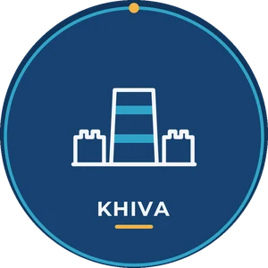
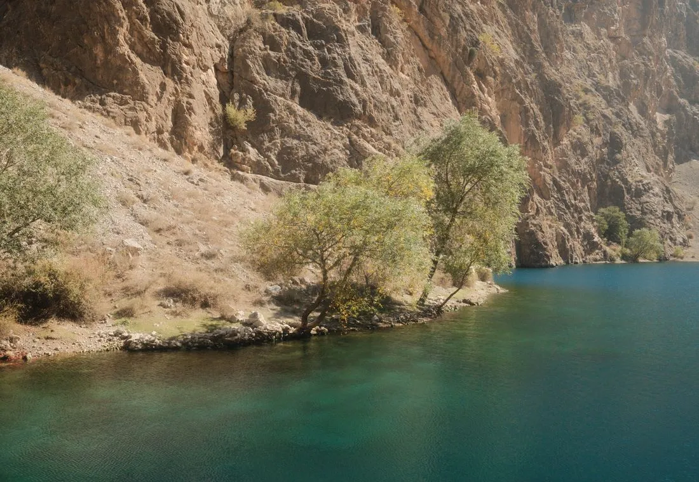
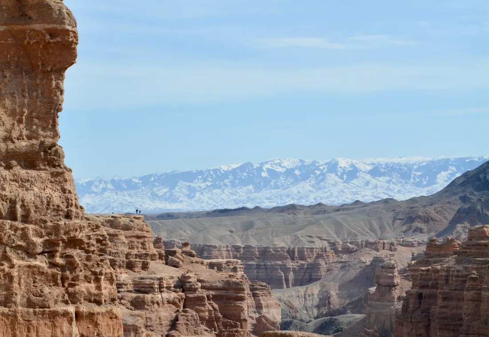
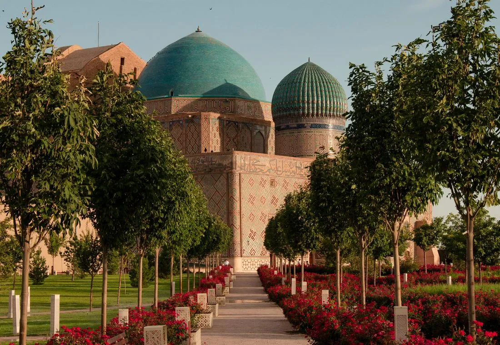

8 أيام🔒 قيد التحضير
8 أيام🔒 قيد التحضيرUZ
أوزبكستان الكلاسيكية
خيوة · بخارى · سمرقند · طشقند
خيوة وبخارى وسمرقند وطشقند — تبدأ من خيوة كل سبت
ابتداءً من… للشخص
عرض الرحلة →رحلات خاصة وجماعية صغيرة في أوزبكستان — القباب الفيروزية في سمرقند وبخارى وخيوة، مخيمات اليورت في الصحراء، بحيرات جبلية وأدفأ ضيافة. نحن نخطط لكل شيء، وأنت تستمتع بالرحلة فقط.
اعرف المزيد عن أوزبكستانمن خيوة إلى سمرقند ووادي فرغانة في رحلة واحدة — نتولى النقل والمرشدين والفنادق.
سمرقند وبخارى وخيوة — جواهر طريق الحرير ذات القباب الزرقاء، تربط بينها القطارات السريعة.

جبال ألماتي، وجدران وادي شارين الحمراء، ومدينة تركستان المقدسة.
بحيرات جبلية، خيام البدو الرحّل، خيول في مراعٍ لا نهاية لها وشواطئ بحيرة إيسيك كول.
بنجكنت العريقة، وخجند على نهر سيحون، وجبال بامير — سقف العالم.
ستة مسارات مجرّبة في كل بلد — افتح أي رحلة لترى الخريطة والبرنامج اليومي والسعر.
8 أيام🔒 قيد التحضيرخيوة وبخارى وسمرقند وطشقند — تبدأ من خيوة كل سبت
 5 أيام🔒 قيد التحضير
5 أيام🔒 قيد التحضيرجوهرتا طريق الحرير في خمسة أيام
 10 أيام🔒 قيد التحضير
10 أيام🔒 قيد التحضيرمن خيوة إلى سمرقند مع ليلة في خيمة صحراوية
 7 أيام🔒 قيد التحضير
7 أيام🔒 قيد التحضيرزيارة الأئمة الكبار وشيوخ الصوفية

15 أيام🔒 قيد التحضيرأوزبكستان وطاجيكستان وكازاخستان وقيرغيزستان في 15 يومًا
 8 أيام🔒 قيد التحضير
8 أيام🔒 قيد التحضيربرج بورانا، بحيرة إيسيك كول، ينابيع ألتين أراشان الحارة، جيتي أوغوز، وادي سكازكا وصيّادو النسور
 4 أيام🔒 قيد التحضير
4 أيام🔒 قيد التحضير 5 أيام🔒 قيد التحضير
5 أيام🔒 قيد التحضيرأودية وبحيرات جبلية في جنوب شرق كازاخستان

8 أيام🔒 قيد التحضيرألماتي والبحيرات وتركستان وأستانا

4 أيام🔒 قيد التحضير 4 أيام🔒 قيد التحضير
4 أيام🔒 قيد التحضيرنقوش قديمة وجبال ملونة ورمال تغني
 4 أيام🔒 قيد التحضير
4 أيام🔒 قيد التحضيرالعاصمة المستقبلية و«سويسرا كازاخستان»
 7 أيام🔒 قيد التحضير
7 أيام🔒 قيد التحضيرالبحيرة الدافئة والصخور الحمراء وصيّادو النسور والأودية
 5 أيام🔒 قيد التحضير
5 أيام🔒 قيد التحضيرخيام وخيول وبحيرة على ارتفاع 3016 م
 9 أيام🔒 قيد التحضير
9 أيام🔒 قيد التحضيرأفضل ما في قيرغيزستان في تسعة أيام
 6 أيام🔒 قيد التحضير
6 أيام🔒 قيد التحضيربحيرة جليدية وينابيع ألتين أراشان
 6 أيام🔒 قيد التحضير
6 أيام🔒 قيد التحضيرخان حجري وليالٍ في الخيام
 4 أيام🔒 قيد التحضير
4 أيام🔒 قيد التحضيرمدينة عمرها 3000 عام وغابة الجوز الكبرى
8 أيام🔒 قيد التحضيربرج بورانا، بحيرة إيسيك كول، ينابيع ألتين أراشان الحارة، جيتي أوغوز، وادي سكازكا وصيّادو النسور
 5 أيام🔒 قيد التحضير
5 أيام🔒 قيد التحضيرإسكندركول والبحيرات السبع وبنجكنت القديمة
 10 أيام🔒 قيد التحضير
10 أيام🔒 قيد التحضير«سقف العالم» من دوشنبه إلى أوش
رحلة قصيرة إلى بحيرات جبال فان
مدينة طريق الحرير وبحيرات جبال فان
 6 أيام🔒 قيد التحضير
6 أيام🔒 قيد التحضيرحصار وإستروشان وخجند وبنجكنت الصغدية
 7 أيام🔒 قيد التحضير
7 أيام🔒 قيد التحضيررحلة تخييم بين البحيرات الزمردية
لم تجد الرحلة المناسبة؟ نصمم برامج خاصة للأزواج والعائلات والمجموعات.
أفلام قصيرة عن المدن والثقافة والطبيعة — شاهدها قبل رحلتك.
مقاطع من القناة الرسمية للجنة السياحة في أوزبكستان ووسائل إعلام دولية (Euronews وBBC وInsider وEater) · شاهد على يوتيوب →
للمسافرين بمفردهم والأزواج من أي بلد: مواعيد ثابتة، مرشدون يتحدثون الإنجليزية، وكل شيء منظم.
احجز خدمة واحدة — مرشد أو نقل أو فندق أو استقبال في المطار أو eSIM — دون شراء رحلة كاملة.
خبراء محليون مختارون. تقييمات حقيقية؛ الحجز والدفع بأمان عبر Moviy Nomad.
اختر الأماكن وعدد الليالي والفنادق والمواصلات والمرشد — وشاهد المسار على الخريطة وسعرًا تقديريًا فورًا.
ابدأ التصميم →


فريقنا مقيم في أوزبكستان ويعرف كل شارع ومرشد وكل مكان مميز.
الفنادق والقطارات والتنقلات والمرشدون وتذاكر الدخول — في باقة واحدة واضحة.
وجبات حلال، وبرنامج يراعي أوقات الصلاة، وإيقاع مريح للعائلات.
مرشدون يتحدثون الإنجليزية والروسية؛ والعربية والتركية عند الطلب.
بلا رسوم خفية — تعرف بالضبط ما يشمله السعر قبل الحجز.
شخص حقيقي على واتساب أو تيليجرام طوال رحلتك.
خلال عامين ونصف نظّم فريق Moviy Travel رحلات لأكثر من 10,000 مسافر. Moviy Nomad هو الفريق نفسه بمرشديه وسائقيه لضيوف من كل أنحاء العالم: منظم رحلات مرخّص (DMC) في أوزبكستان — خيوة وبخارى وسمرقند وطشقند وغيرها.
✓منظم رحلات مرخّص — لجنة السياحة في جمهورية أوزبكستان، رخصة رقم 887333
شاهدوا رحلاتنا على إنستغرام: @moviy_travel58 ألف متابع · أكثر من 600 منشور لرحلات حقيقية→أخبرنا بتواريخك وعدد المسافرين ورغباتك عبر واتساب أو تيليجرام.
نُعدّ لك برنامجًا يومًا بيوم مع سعر واضح لمجموعتك.
نستقبلك في المطار ونهتم بكل التفاصيل الأخرى.
رسائل حقيقية من مجموعة مسافرينا، مترجمة من الأوزبكية.
“شكرًا على كل جهدكم واهتمامكم. لقد عزمت أن أسافر مرة كل عام — معكم، مع أصدقائي وأهلي.”
“خدمة ممتازة: عاملنا السائق نوديربك كأننا عائلته، ولم نشعر بطول الطريق. إن كنت ما زلت مترددًا — اذهب، لن تندم.”
“ذهبت مع والديّ وأعجبتهما الرحلة كثيرًا حتى إننا نخطط للعام القادم. ترددت في البداية — فشركات السياحة كثيرة اليوم — لكنها كانت رائعة حقًا.”
“كانت أفضل مما توقعنا. جمع 500 شخص في مكان واحد ليس أمرًا سهلًا. نرجو تنظيم المزيد من هذه الرحلات!”
“كان الأسبوع الماضي لا يُنسى حقًا — ربما لأنها رحلتي الأولى. عدت بانطباعات جميلة وذكريات عن أناس رائعين.”
“شكرًا جزيلًا لإلياسبك وفريقه — عملوا بإخلاص لنرتاح ونستمتع. وكسبنا أصدقاء كثيرين في المجموعة.”
صور وانطباعات شاركها مسافرونا. هل سافرت معنا؟ أضف صورك!
لا توجد قصص بعد — كن أول من يشارك.
يمكن لمواطني كثير من الدول زيارة أوزبكستان وكازاخستان وقيرغيزستان دون تأشيرة أو بتأشيرة إلكترونية بسيطة. أخبرنا بجنسية جوازك وسنتحقق لك من القواعد الحالية.
الربيع (أبريل–يونيو) والخريف (سبتمبر–أكتوبر) مثاليان لزيارة المدن. والصيف هو موسم الجبال والبحيرات في قيرغيزستان وطاجيكستان.
نعم. ننظّم رحلات خاصة للأزواج والعائلات، إضافة إلى الرحلات الجماعية وبرامج لوكالات السفر.
معظم الطعام في المنطقة حلال. ويمكننا كذلك ترتيب البرنامج حسب أوقات الصلاة وزيارة الأماكن المقدسة.
راسلنا عبر واتساب أو تيليجرام. بعد موافقتك على البرنامج نؤكد الحجز ونرسل لك تفاصيل الدفع.
نعم. نقدّم خدمات الاستقبال والتنظيم الأرضي وأسعارًا خاصة للوكالات والمجموعات.
اختر طريقة التواصل الأنسب لك — وسنرسل لك الأفكار والبرنامج والسعر.
+998 99 980 42 14 · Safina Qozoqboyeva